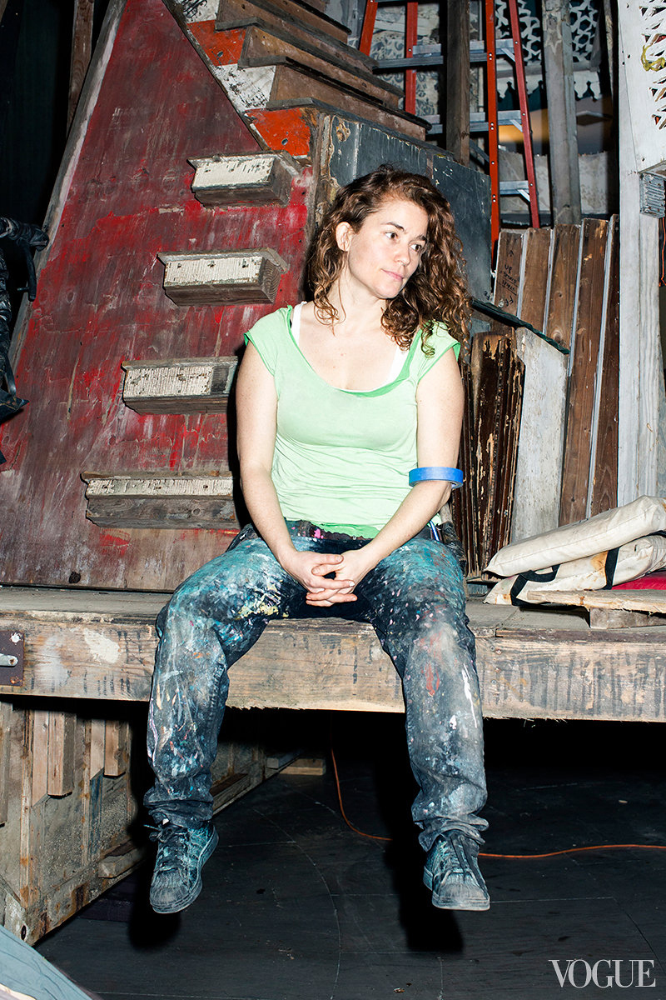

Biography

Early Life/Influences
Before adopting the pseudonym Swoon, Caledonia “Callie” Dance Curry was born in New London, Connecticut in 1977. Her family relocated to Daytona Beach, Florida, where she was raised and at nineteen years old, she moved to Brooklyn, New York. When she first started studying art, she drifted toward classical, renaissance-style painting and portraiture. In 1999, she started street painting; her first interventions were wheat pastings in cities around the world. She graduated from Pratt Institute, in 2002, with a Bachelor of Arts degree in Fine Arts. She credits her inspirations and influences from art historical and folk sources, German Expressionist wood block prints, and Indonesian shadow puppets.
Career
Swoon has predominantly gained attention because of her wheat pastes that can be found all over the world. Artnet.com categorizes her to be a contributor of the Pop Art movement. Other mediums that has expanded her career include drawing, printmaking, site specific installations, street interventions, boat projects, and community-based projects. Aside from individual work, Swoon has collaborated on many different projects with several artists.
"Dithyrambalina" started as a project in 2011 that consisted of 25 collaborating artists that turned a New Orleans house into a “Music Box”.
Swoon’s handcrafted boats project started with "Miss Rockaway Armada" where they went down the Mississippi River. This inspired the Swimming Cities series started in 2008 with "Swimming Cities of Switchback Sea", where a group of people came together to make handmade ships to set sail down the Hudson River. Then, "Swimming Cities of Serenissima" took fleet in May of 2009 with three vessels navigating from the Adriatic Sea to Venice, Italy.
In 2010, right after the Haiti Earthquake, she started a sustainable building project called the Konbit Shelter. So far, it has produced a community center and two single-family houses in the village of Komye and Cormiers, Haiti. In addition, educational workshops are being offered to the community, especially for the children. Today, they still hosts workshops and are planning of building a new single-family home in the future.
Another big project that she started herself was the Heliotrope Foundation. It was created to support artists and execute her vision of her long-term community-based projects.
Present/Today
For the last 14 years, with her amazing skills and talent, she has continued to explore the relationship between people and their built environment. This resulted into a series of projects by many galleries and museums such as the Los Angeles Museum of Contemporary Art, the Museum of Modern Art in New York, the Institute of Contemporary Art Boston, and the Sao Paolo Museum of Art. Most recently, in 2014, Swoon had a show which was a site-specific installation at the Brooklyn Museum of Art. It was called "Submerged Motherlands"; she created a 65-foot-tall Mapou tree made of dyed ribbon and paper cutouts along with her boats/rafts on display. Roland Henry, a managing editor of an art culture magazine, "Very Neatly Almost" (VNA), cited Swoon to be one of several women that are “redefining street art” today.